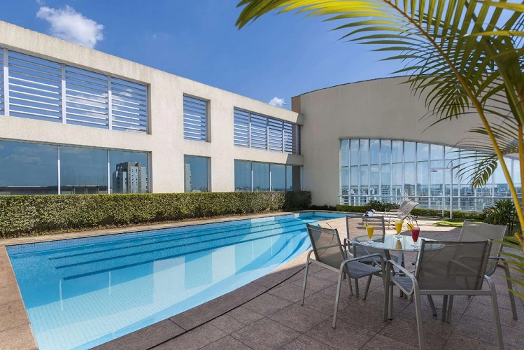

Hospedagem em São Paulo
Conheça São Paulo

Ibis Styles São Paulo Anhembi
Ibis Styles Sao Paulo Anhembi fica a 10 minutos de carro de Avenida Paulista.
Quando bater a fome, os hóspedes podem ir até o Restaurante 14 IBIS, que serve
pratos da culinária regional e abre para café da manhã, almoço e jantar.
Além disso, os viajantes adoram os funcionários prestativos e o café da manhã no local.
A propriedade conta com transporte público nas proximidades: Estação Portuguesa-Tietê fica
a 3 minutos e Estação Carandiru fica a 10 minutos de caminhada.

Hotel Comfort Ibirapuera
Em São Paulo (na área de Moema), Comfort Hotel Ibirapuera está a poucos passos de
Paróquia Nossa Senhora Aparecida e a 12 minutos a pé de Shopping Ibirapuera.
As comodidades presentes incluem um business center, balcão de recepção 24 horas e equipe multilíngue.
Este hotel possui instalações para eventos com 36 metros quadrados,
incluindo sala de reunião, e é o local ideal para quem está planejando eventos em São Paulo.
Estacionamento sem manobrista (sujeito a cobrança) está disponível no local.

Blue Tree Premium Morumbi
O Blue Tree Premium Morumbi está na área de negócios de São Paulo e oferece o acesso direto a Teatro Vivo.
O restaurante Noah e o lobby bar estão disponíveis no local com uma localização primordial em São Paulo.

Mercure São Paulo Pamplona
Se você procura um hotel em São Paulo confortável para sua viagem de negócios ou aproveitar
a cidade ao máximo, o Mercure São Paulo Pamplona é para você.
Os quartos são espaçosos e tem uma decoração moderna, com opções de room office.
Todos climatizados e com wi-fi grátis.

Sheraton São Paulo WTC Hotel
Localizado dentro do World Trade Center, o Sheraton São Paulo alia a arquitetura moderna à decoração de luxo.
O hotel dispõe de piscina, academia e business center de última geração com salas de reuniões.
Os quartos deste hotel da rede Sheraton possuem ar-condicionado, Wi-Fi gratuito, TV a cabo, frigobar e banheiro privativo.
O serviço de quarto está disponível 24 horas.

Bourbon Convention Ibiapuera
O Bourbon São Paulo Ibirapuera Convention está localizado em São Paulo, no Bairro Moema,
a 4 km do Aeroporto de Congonhas e a 100 m do Shopping Ibirapuera.
O estabelecimento dispõe de recepção 24h, variado café da manhã e salas para reuniões e eventos.

Blue Tree Premium paulista
Situado a 160 metros da Avenida Paulista, o Blue Tree Paulista tem uma localização excelente em São Paulo.
Este hotel com Wi-Fi gratuito e piscina coberta oferece fácil acesso ao transporte público e
fica em meio a teatros, museus, shoppings e restaurantes.

Golden Tulip paulista Plaza
Este prédio está localizado no elegante bairro dos Jardins. O Shopping Pátio Paulista,
estação de metrô da Linha 2 Azul e Linha 3 Verde, estão bem próximos. Como também o hospital HCor.
Os serviços oferecidos são de ótima qualidade. Há um lounge bar, restaurante, 2 piscinas (adulto e criança),
sala de eventos, health club, além do heliporto.
Todos os apartamentos possuem ar condicionado.

Renaissance São Paulo Hotel
O Renaissance São Paulo Hotel está localizado em um dos bairros mais sofisticados e culturais de São Paulo, no Jardins.
A propriedade oferece experiências exclusivas para quem busca entretenimento, conforto e cultura na cidade.
Para perfis de negócios ou lazer, a infraestrutura do hotel conta com uma diversidade de serviços que vão desde
opções gastronômicas renomadas, de bem-estar e saúde, a uma das maiores academias de rede hoteleira. Além disso,
o hotel reúne o maior acervo de obras de arte em hotéis no Brasil e,
ainda, espaços para eventos e encontros sociais e corporativos.como criar loja